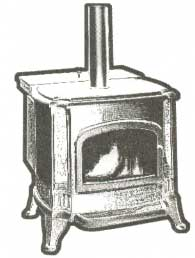
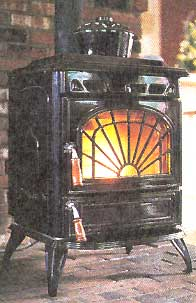
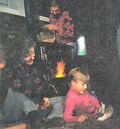
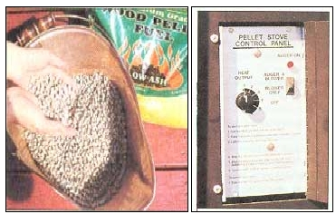
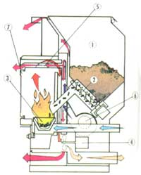
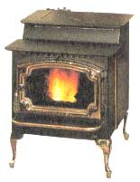
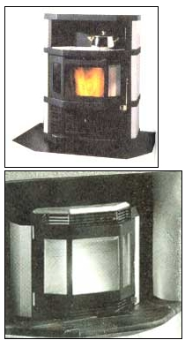
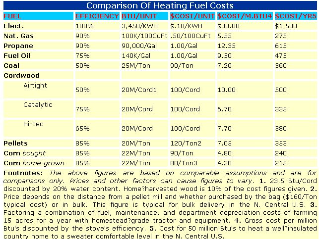

In 1979 I appeared on a Maine Audubon TV program called "Woodburners" that examined the past, present and future of this most abundant of self-renewing energy resources. Most of us in the cast and crew had been heating with conventional log-wood for years, and what got us most excited was the future prospect for a new arrival in Maine: pelleted fuel.
Pellets are manufactured from wood products that normally go to waste: "trash" wood such as roadside saplings culled by road crews; limbs, tops and other residue of logging; sawdust and wood chip byproducts of lumber mills and wood manufacture; and cardboard and other wood fiber such as paper packaging that normally goes to clog our landfills. The raw material was ground, dried and compressed-through the same kind of equipment used to form livestock feed-into pencil eraser-sized biscuits of uniform size, dryness and (with minor variations depending on source) energy content.
For the first time, pellets promised to convert wood into a uniform, concentrated product that could be delivered to a heating fire every bit as easily as coal, oil or gas. Loose, dry and easily transferred by auger, conveyor or simple gravity, it could be transported at a competitive price, in bulk, to industry or in convenient bags to homeowners in the country as well in cities and towns. We foresaw a second revolution in wood energy.
Maine and Eastern Canada as well as the Pacific Northwest on each side of the border stood to benefit from increased use of wood pellets. Both areas are heavily forested and logged for lumber and wood pulp. Pelletizing the slash would clean up the woods while adding jobs to their often-troubled economies.
Indirectly, pellets also promised to help clean up the air. We anticipated that a ready supply of cheap wood pellets could supplant coal and oil and bring an end to much industrial pollution. In industrial applications, pellet exhaust could be easily "scrubbed" 100 percent clean. There was even talk of pellets serving as feedstock for industrial-scale production of a clean-burning auto fuel as is done in Brazil.
In a stove, logs are placed on a grate, grille or on the floor facing a door with one or more air inlets in front and a dampered flue in back. The flue's draft sucks in a large volume of air, pulling a constant flow of oxygen past the fire from front to back. Logs can take the oxygen they need as they need it, so they needn't be uniform in density, size or water content from one armful to another.
But not all the oxygen going by is exposed to burning wood, and vice versa, and different parts of different logs are burning at different speeds and efficiencies at any one time, so combustion efficiency varies widely throughout the fire. Also, the logs contain about 20 percent water, which must be boiled off before the wood will ignite, so a great deal of fuel energy is wasted, sending up the flue a combination of water vapor, gases and incompletely burned hydrocarbons, or smoke (which, in an EPA stove is reclaimed in part by being converted to heat in a combuster or engineered air flow system).
The wood fiber that goes into pellets is dried in processing to a water content of as little as 5 percent, and being about the size and shape of rabbit pellets (incoming or outgoing), each exposes a large surface area (compared to mass) to passing oxygen. They beg to burn, but in the fire basket, pellets settle into a compact bed that offers no edges or splinters to ignite, so-like coal-will not burn without a strong draft.
A network of tiny, convoluted air channels snakes up between the pellets. When the pellet bed is ignited (with a flammable paste, much as you use starter fluid to ignite charcoal in the backyard barbecue), a small fan begins to push a constant supply of air through the pellets.
During the burn, the surface of the fire bed is constantly replenished with fresh pellets by an electric auger, so the fuel burns hot, evenly and thoroughly from the bottom up. Additional oxygen is introduced at the proper level above the fire and at the correct velocity to burn the smoke thoroughly before it leaves the fire box. Pellets burn so clean, emitting less than the EPA's no-test cut-off level of 800kg of particulates/hr, they are effectively exempted from the smoke-emission testing program forced on log-burning home heaters. Though the forced-draft process is the result of precision engineering, it follows the same principle as when you blow on coals to brighten up a campfire or a blacksmith uses in applying a bellows to his forge.
Hot as the fire is, the venting system keeps the exterior of the stove cool enough that it can be located nearer combustible walls and furniture than the vast majority of conventional stoves. With added heat-shielding, most models are Insurance and Fire Code-approved for use even in the close and flammable confines of a mobile home.
Hot exhaust gases circulate through a network of thin-walled heat exchanger channels in the body of the stove that permit transfer of heat energy to a counter flow of room air forced through a separate set of channels by another fan. Heated room air exits to circulate through the room or be directed via optional hot-air conduits through the whole house.
Once drained of their heat energy, the fan-forced exhaust gasses exit the stove through a rear- or top-mounted vent pipe. Unlike a conventional chimney, the flue need not run straight up and above the roof peak to take advantage of gravity (hot air rises, but this exhaust is so cool it needs fan energy to remove it). The exhaust system cannot be hidden in enclosed walls or crawl spaces, though, and should be designed for easy access, inspection and occasional disassembly inspection and-if needed-for cleaning.
A precision thermostat on the stove, or optionally, a low-voltage wall-mount unit, varies heat output by increasing or decreasing fuel flow. In contrast to a conventional stove that manages heat output by altering air supply with draft and exhaust dampers, a pellet stove maintains a constant, full air flow so long as the fire is hot. Heat output is increased by augering in more fuel. Fully oxygenated combustion of a super-dry fuel guarantees a highly efficient burn, easily exceeding the 80-something percent efficiencies that some catalytic stoves boast of.
Further, the smoke is "burned twice," as they say in the trade, and burned at turbo-charged temperatures to boot, so it contains the fewest unburned hydrocarbons of any wood-burning heater. Emissions are well below the one gram/hr. of the cleanest-burning catalytics and marginally cleaner than thermal-mass firestoves that also feature an open-draft fire, but use unprocessed fuel wood with a moisture content that is two to four times that of pellets.
Heat output ranges from 5 or 6,000 Btus to 35 or 40,000, enough to heat the main living area of a country house or all of a small and well-insulated town house or city apartment.
No log stoves I know can maintain that low 6,000 Btu heat output for very long. When fired up to take the chill off a room in cool but not cold weather, they eventually roast you out of the room. A pellet stove can be burned as cool as you like. With precise heat control and a wide heat-output range, and measuring only two feet wide and just a few inches more deep, they are ideal for moderate climates, small rooms and super-insulated, airtight homes. City stoves.
Most pellet-fueled home-heating stoves come with a glass window in the front door that is kept clean by directed air flow that keeps off what little creosote might cook out of the super-dried fuel. Inside, a realistic-looking ceramic log set passes for a real log fire unless you look hard. Still, with a hint of wood smoke in the air and pelleted-wood flames licking up around, the fire lacks the completely artificial feeling of a gas log.
The stoves have a fuel bin that is loaded from the top (in the best stoves, fuel level is visible through a tempered-glass lid). You can pour in something under a half-feed bag load of up to 40 pounds one evening and forget the stove till morning after next. If heating demand is high you'll want to look in twice a day. If it's really cold, you will top off the fuel before going to work in the morning just so you don’t have to worry about running out if you decide to work late. No log stove can approach such long burn times.
I expressed concern to a retailer about back drafts carrying carbon monoxide into the house if the electricity failed, but he assured me that when the fan-forced draft ceases, the fire dies almost instantly and the pellet load collapses in on itself, extinguishing any coals. Being bone dry, it won't smolder. It either burns or it doesn't. Any lingering fumes are drawn out by the warmth of the flue.
All wood contains uncombustible minerals that remain as ash after it burns. The ash content of pellets is low, but varies depending on raw material: the least from fine-furniture hardwood chips and sawdust; the most from cardboard or paper that may contain inert mineral binders and chalk coating on printed faces.
However, pellets burn so thoroughly that ash is powder-fine, fire-cleaned to a pure gray-white, and is minimal in quantity. It is agitated to filter down through the grate into the ash pan by the impact of the continuous flow of new fuel from the hopper.
A bottom door swings out, bringing the ash drawer with it and you scoop out the ash. But, so well burned is the ash, you needn't take it out to the compost or garden or sprinkle it on winter ice more than once a month or so.
Some older models designed around consistent, low-ash fuel from a single source had a hard time achieving clean burns using fuels with variable ash content. But any stove built after '93 should be able to burn any pellet fuel, with the only difference being small variations in burn times and in ash production.
Pellet stoves are at once the most expensive and cheapest alternatives in wood-burning space-heaters: expensive because they cost around $3,000 new and $1,700 used; cheap because they don't require a fire-safe lined ceramic chimney or insulated metal flue costing $1,500 to five times that. Pellet stoves burn so efficiently that the end product of combustion, the "smoke," is a small amount of nearly invisible, nearly pure C02 water vapor, by far the cleanest in the industry. It exhausts through a three-inch-wide pipe, smaller than needed for many gas water heaters! Plus, it is so cool that you can can hold your hand in it without discomfort as it exits the stove, and you can exhaust it through a run of heavy plastic plumbing pipe. That's right, a plastic flue.
You'll have to run the micro-flue to the outside, but not all the way straight up through every floor of the house to the roof, just through the nearest outside wall and enough higher than the stove to keep the warm fumes rising.
These stoves are not delicate, but are precision heating devices and they must be installed, or at least the adjustments and hookups to public utilities made, by qualified technicians with appropriate licenses who can obtain required permits and inspections. Don't think you can install it yourself as you might with a conventional wood burner. The burner unit should be installed and vented by a qualified heating tech. The electrical components must be hard-wired by a licensed electrician. Then, the work must pass multiple building inspector's check-offs that an amateur can't arrange or satisfy.
Pellets are a manufactured fuel. You have to purchase them unless you want to spend a million dollars to build your own processing plant. And you couldn't burn sticks in the stove if you tried. (Besides, it's illegal.)
Cost ranges from $75 to $150 (fall 1995 prices) a ton depending on transportation costs-the nearer a plant, the cheaper the pellets. A rule of thumb: Maximum consumption rate is two pounds an hour, about a dime an hour. That's half the cost of oil heat and comparable to the cost of cord-wood (but without the work.) See the chart in the Image Gallery for more numbers.
Yep, these stoves will burn corn. Not Golden Bantam or Super XXX Sweet corn on the cob, but the hulled and shucked, air-dried golden kernels of field corn, or "horse corn" raised by the megaton in the Great Plains for livestock feed.
The first time I heard this, I thought it must be a joke. Unless Archer Daniels Midland or someone with a big grain elevator has gone through the bureaucratic nonsense required to obtain an EPA exemption, it couldn't be legal. However, dry corn contains less than 20 percent water (the EPA maximum legal water content for pellets), and too-wet fuel is the only serious problem I can think of. But that's being common-sensical and presuming more than typical flexibility in a bureaucracy that relies on making things difficult for its existence.
In fact, only wood pellets of a certain composition are specified as an approved fuel in the EPA's original 66-page, three-column, single-spaced, small-print tome of regulations. No mention is made of pellets manufactured from recycled cardboard-say nothing of corn. And, to be tacitly exempt from EPA's enforced do-goodery, pellet stove makers must agree to design and build the fuel hopper and feed auger so they can't be removed and the stove used to burn cordwood or any fuel but wood pellets.
I suspect that widespread popular discontent with EPA's overbearing enforcement of one-size-fits-all regulations in general, and resentment of the woodstove Standards of Performance in particular, has the bureaucrats on the defensive, and that no gang of black-garbed EPA enforcers is about to invade your home and shut down the corn-stove. Which is to say, if burning corn in your pellet stove is an exercise in civil disobedience, welcome to the revolution. If only Jimi and Janis were still with us we could have a Woodstock II that mattered.
I guess my main problem is that corn is a foodstuff. And, intuitively-viscerally-I felt that putting food in a stove had to be some sort of crime against nature and the land.
Of course, what's burned isn't Golden Bantam or Super XXX Sweet, but field corn raised primarily as hog feed, but it is also used to feed saddle horses and song birds, isn't it? And to make plastics, and to brew into alcohol for auto fuel, house paint and whiskey.
Those of us who came to maturity in the organic-gardening tradition have long criticized the economics of growing field corn, which utilizes the petrochemical anhydrous ammonia as a nitrogen source at about 20 percent efficiency. Then the crop is fed to livestock that convert it to protein (fat and cholesterol) at less than 10 percent efficiency. We consume the meat, converting (what isn't deposited as lard around our waistlines or as plaque on our arteries) into nutrients at less than 10 percent efficiency. Which is to say that petroleum is converted in several stages to human heat-energy at a .002 efficiency rate. In still other words, 99.998 percent of petroleum-our most concentrated and flexible finite energy resource-is wasted. Of course, in the process a lot of oil field roughnecks, grain farmers, hog raisers, meat packers and grocers earn a living, which is another story.
But, instead of converting sun energy to human energy via the petroleum/ NH4N03/corn/hog/pork chops route, isn't it more efficient to skip the livestock steps and use the corn directly in any way we can? I think you'll agree that providing our internal heat by eating the corn direct (and using compost rather than ammonium nitrate as fertilizer) is ten times more efficient. In numbers: 20% of 10% = .02% efficiency vs. .002%.
A pellet stove burning corn at high efficiency heats our outsides (and can cook meals, dry mittens, and keep the teapot hot at the same time) more efficiently than we convert corn to inside energy. And, if the corn is organically grown (and more and more is being raised commercially without chemical fertilizers and with the barest minimum of weed and bug-controls) we can avoid the energy loss at the petroleum link.
Best of all, if you grow your own corn for fuel, the stove will warm you by burning organic corn raised at no cash or environmental cost, we're approaching no-impact heating.
Growing enough corn to heat you through the winter is a little much. I figure that aiming for a low-soil-drain, homestead-level yield of 50 bushels (weighing 55 Ibs apiece) per acre, it would take me at least 20 acres using a three-year rotation system (planting green mulches or leaving the land fallow for two years between corn crops) to keep the soil at full vitality without chemicals. It is easier for me to harvest the wood lot. However, if you live in Kansas and have the land, tractor, and harvesting equipment and grain storage, you might try growing your heating fuel. If you do, tell Mother about it, will you?
However, buying corn-cheapest in you-haul-it bulk from an elevator-you still come out ahead. Two cautions: Be sure the corn is bone dry. And, if buying in bulk, be sure you don't get a lot of millings that can gum up the auger.
Like yourself perhaps, and many other Mother Earth News readers for sure, I'm just too rough around the edges to live easily with a pellet stove. They are very expensive, automated machines that need a level floor and stable environment offering a constant (if tiny) supply and a reliable source of electric power. I prefer to provide life essentials such as wood for heat myself rather than squandering my limited time on this earth working for money to buy it from someone else. I prefer to live free of the grid, well away from sidewalks and as close to nature as I can get, in a tipi or on an old wooden boat or in a rustic cabin that I can leave for months at a time and not worry about having valuable things like pellet stoves stolen or vandalized.
But, I'm a throwback. Modern people actually like living in towns or cities, or they are stuck there even if they don't much like it, and fire logs are just too awkward and low-energy to truck to town and haul up three flights of stairs. Pellet stoves offer the only practical way developed to date for conservation-minded people to heat with renewable fuel in town. And the planet could use the help. Gas-log heaters are growing in popularity, but they don't distance us a bit from dependence upon fossil fuels. In that sense, those little nuggets might well represent a last stand for heat-energy independence.
I view the pellet stove as an example of truly appropriate technology-exemplifying the right mix of brainpower and hardware to civilize wood heat so it is acceptable in America's living rooms-not as a fad as in the '70s but an economically competitive alternative to finite energy resources. In making renewable wood energy truly practical for all, a pellet-burner is perhaps the most 21st-century-modern home appliance there is.
Nova Scotia, New Brunswick and PEI (the Maritime Provinces of Canada's Atlantic Coast) are at the bitter end of the gas and oil supply lines, so the cost of fossil heating fuel can be prohibitive, especially these days, with both the lumbering and fishing industries on rough times. Cordwood is readily available, but conventional wood stoves demand constant attention, so when a first local pellet mill was built two years ago and proved able to sell pellet fuel at a logwood-competitive cost of CAN$100/ton (US$73), between 3,000 and 4,000 self-tending pellet-burning stoves were purchased and installed.
However, once a substantial number of stoves had been in operation for any length of time, home-insurers in the Maritimes found themselves paying for smoke damage in pellet-heated homes. Most were extensively cleaned and painted. But in one well-publicized case, reported in the August 19, 1995 Hearth & Home magazine (where a smoke-cleanup crew left the miscreant stove running unattended over a two-day holiday), the insurer found it cheaper to tear the house down and rebuild from scratch than to cleanse it of pellet-stove smoke. NOTE: This is not fire damage. Pellet stoves's outstanding record of fire safety remains valid. However, insurance claims for smoke damage have been so high that some Canadian insurers have threatened to refuse to cover pellet-heated homes.
As any experienced wood-burner knows, smoke from a smoldering wood fire makes a greasy brown creosote that can stain the ceiling, discolor upholstered furniture and drapes, and make your clothes smell like old-time pine-tar liniment. You can't wash it off or paint over it either; the brown stain soaks into fabric, plaster and unfinished wood, will eat its way through latex interior paint in a day, and undermine oil-based paints and make them slough off in a few months.
Insurance companies, stove makers and retailers, and the government are teaming up to research the sources and cures for the problem (and Mother Earth News will keep readers apprised of their findings). But for now, it seems that minor smoking occurred when improperly installed vent pipes failed to draw out smoke when electricity failed and the vent fan quit. Major damage happened when the automatic fuel-feed clogged and a smoldering fire worked its way through the clog and into the fuel hopper.
If you have your pellet-burner installed by an experienced, licensed pro, you should have no venting problems. Just be sure the vent outlet is located high enough above the fire bed that the pipe will draw naturally even if electricity fails. And (as with any stove) avoid lengthy horizontal runs of pipe, and have any that you do install aiming up at a significant angle. Most smoky Canadian stoves had six foot or longer horizontal runs of pipe, some to avoid Code prohibitions against outletting smoke within a certain distance of a window.
To avoid auger clogs and hopper fires you must treat a pellet stove for what it is, a hybrid between a hand-managed log stove and a fully automatic oil or gas burner. Problems arise when homeowners just keep dumping in fuel without maintaining the appliance. To function properly, the fuel-feed auger should run almost constantly, delivering a constant dribble of pellets so that a hot, super-clean fire burns continually. That first clog will hinder fuel-flow, heat output will fall, the thermometer will demand more fuel, and the problem will compound. Check, and if need be, clear the mechanism each time you add pellets. (And this goes double if you are burning corn!)
Another problem is inconsistency between batches of fuel. Some Canadian critics have charged that mills are adding chemicals or non-wood components. The jury is still out. (In Canada, wood pellets must be 100% wood; in the U.S. there is no regulation yet and "wood" pellets can be made from cardboard or paper or a mix of fibers, all of which will burn, though at different heats, efficiencies and ash residues.)
Also, to be honest, the home-scale pellet-making industry is relatively new and the technology untested. Raw material sources vary considerably. As any experienced wood burner will understand, even though dried and pulverized from chips or sawdust, pellets pressed from pine will vary in heat and ash content from pellets made from oak. I've burned cardboard, logs rolled and pressed out of newspaper as well as shaved-wood excelsior, Kraft paper rolls, leftover newsprint, and more. It all burned, but each type of fuel needed a different arrangement on the grate to supply needed air, and some of it simply had to be mixed with a more conventional fuel to burn at all. I had to experiment with each type to keep a satisfactory fire. The same is true of a pellet-burner.
I suppose there are some charlatans in the pellet-making business who'll misrepresent their product. There surely were some country rounders in the cordwood business down here in the Lower 48 before state legislatures laid down the law defining a cord as 128 cubic feet, and before wood-burners learned the hard way. Caveat emptor (buyer beware) as they say, and have been saying since J. Caesar's day.
So, get the best pure wood fuel you can. Taste it. Wood doesn't taste like cardboard or clay or old newsprint. Be sure it is freshly made, and dry-hasn't been sitting in a damp warehouse or in the rain for any time at all-lest it absorb more moisture than the 1 to 5 percent maximum the stove is designed to handle. A taste-test works here too; fresh, bone-dry pellets will absorb water and kind of vacuum-stick onto your wet tongue; wet pellets won't.
Test-burn each batch of fuel and calibrate as needed before you leave the stove to tend itself. You may have to restart, remove or stir up fuel or manually push down ash till you get it right.
If you've ever smelled smoke during a normal burn-or even if you haven't-add onto your smoke pipe. Carry it up beyond the roof line if you haven't already. A stock 10- or 12-foot length of pipe or two are easy to attach with simple friction-fit couplings and will be barely noticeable on the house. Tack it to the siding every couple of feet with flanged "U"-shaped tin brackets and deep fasteners, lest it blow off in the same wind that downs the power lines, that kills the power, that stops the fan-forced draft, that causes the smoking problem.
|
 ROBIN THOMAS Pellets for this Waterford stove are stored in a two-cubic-foot hopper located above the firebox. The, pellets can be safely poured in during the burn and the hopper never becomes hot enough to prevent you from reaching in to clear the auger. |
 COURTESY OF AUSTROFLAMM, SALT LAKE CITY, UT The heat output switch controls the rate at which pellets are burned. |
 COURTESY OF TRAVIS INDUSTRIES, KIRKLAND, WA A typical pellet stove cross-section: 1. Hopper 2. Auger 3. Firepot 4. Combustion fan 5. Heat exchanger 6. Convection fan 7. Glass airwash. |
|
 Just a sampling of the many traditional and more futuristic designs available. |
 |
 |
|
 |
 |
|